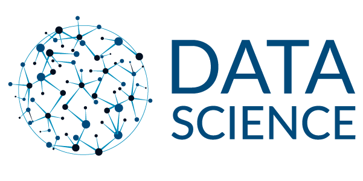

|  | |
Bruno VieiraA profissão de cientista de dados é relativamente nova e formada atualmente por profissionais de setores diferentes do conhecimento, com egressos de cursos de Engenharia, Computação, Administração, Estatística e Economia, por exemplo. A graduação em Ciência de Dados já existe no Brasil em algumas faculdades e é uma opção interessante para quem busca uma formação focada no assunto. O fato é que, para ser um cientista de dados, é necessário se aprofundar na área e estudar de forma multidisciplinar as formas de reunir os dados, identificar oportunidades e traduzi-los para novas oportunidades de negócios. Atualmente, cursos de graduação já contam com a Ciência de Dados em sua grade curricular. O profissional diplomado nessas áreas diversas também pode realizar uma pós-graduação em Ciências de Dados para se especializar no assunto, em cursos online e presenciais. |
|
Conhecimentos Front-End
|
Conhecimentos Back-End
|
Objetivo
Habilidades de um cientista de dadosAs habilidades requisitadas por um cientista de dados podem ser divididas em sete categorias:
|
|
Processo e ferramentas de um cientista de dados |
|
|
Em relação às ferramentas usadas em Data science, aqui estão as ferramentas listadas pelos entrevistados da pesquisa salarial da O’Reilly em 2015. No eixo X, temos o nome da ferramenta, que inclui linguagens de programação, plataformas de dados ou ferramenta de análise. E no eixo Y, temos a porcentagem de respondentes que relatam que usam a ferramenta correspondente. Como podemos perceber, a ferramenta mais utilizada é o SQL(Structured Query Language). O SQL é uma linguagem de programação utilizada para consultar dados no banco relacional. Ela é um conhecimento muito importante para o cientista de dados, pois grande parte do trabalho está em explorar e filtrar(limpar) os dados. A próxima ferramenta é o Excel, uma ferramenta simples porém muito poderosa. Após, há duas linguagens de programação empatadas Python e R. Estas duas linguagens são as queridinhas do mundo de Data science. Em quase todas as pesquisas, essas duas costumam ter empate em termos de popularidade. No entanto, ambas linguagens possuem suas pontos fortes e fracos. Continuando a analise, percebemos que existem várias outras linguagens de programação, plataformas de dados e ferramentas de análise. Para não estender o post demais, não vou falar de cada uma delas, mas é importante conhecer elas para saber o que fazem, seus pontos fortes e fracos. |
|